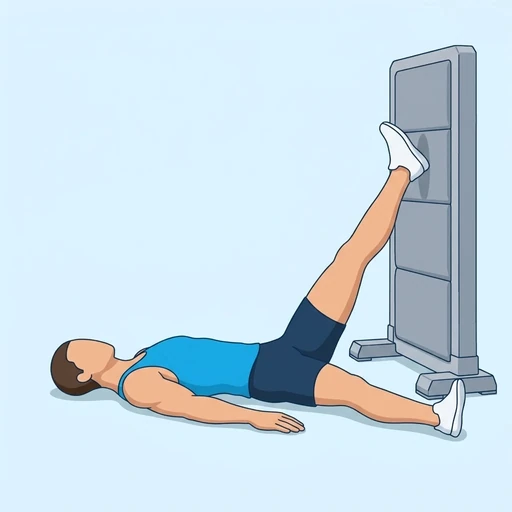

Wall Hamstring Stretch
A restful stretch for the back of the thigh: lying on your back with one leg raised and its heel resting on a wall, you let the hamstring lengthen under gravity. The wall holds the leg in place so you can relax and control the amount of stretch by how close you lie to it.
Upper legs · Bodyweight · Beginner

Muscles worked by the Wall Hamstring Stretch
Primary
Secondary
Also called: hamstring, hamstrings, posterior thigh, biceps femoris.
Equipment
No equipment — this is a bodyweight exercise.
How to do the Wall Hamstring Stretch
- Lie on your back on the floor next to a wall or an open doorway, with your hips close to the wall.
- Raise one leg and rest the heel on the wall with the knee as straight as you can comfortably get it.
- Keep the other leg flat on the floor and your lower back relaxed.
- Shuffle your hips closer to the wall to increase the stretch, or move away to ease it.
- Breathe slowly and hold for the planned time while the hamstring relaxes.
- Lower the leg and repeat on the other side.
Form tips
- Keep your tailbone on the floor; lifting it off the floor takes the stretch out of the hamstring.
- A slight bend in the knee is fine; straighten it only as far as feels comfortable.
- Do not strain; the stretch should feel like a long pull, not sharp pain or tingling.
At a glance
| Body part | Upper legs |
|---|---|
| Category | Stretching |
| Force type | Static |
| Mechanic | Isolation |
| Difficulty | Beginner |
| Equipment | Bodyweight |
| Goals | Mobility |
| Tags | Mobility, Stretching |
| MET | 5.0 (metabolic equivalent, for calorie estimates) |
| Unilateral | Yes |
| Bodyweight | Yes |
| Dataset id | wall-hamstring-stretch |
Wall Hamstring Stretch in German & Spanish
| German | Hamstring-Dehnung an der Wand |
|---|---|
| Spanish | Estiramiento de Isquiotibiales en la Pared |
Descriptions, instructions and tips ship in all three languages in the JSON.
Related exercises
Exercise data (JSON)
The record below is exactly what exercises.json ships for this exercise — names, descriptions, instructions and tips in English, German and Spanish.
{
"id": "wall-hamstring-stretch",
"name_en": "Wall Hamstring Stretch",
"name_de": "Hamstring-Dehnung an der Wand",
"name_es": "Estiramiento de Isquiotibiales en la Pared",
"description_en": "A restful stretch for the back of the thigh: lying on your back with one leg raised and its heel resting on a wall, you let the hamstring lengthen under gravity. The wall holds the leg in place so you can relax and control the amount of stretch by how close you lie to it.",
"description_de": "Eine entspannte Dehnung für die Oberschenkelrückseite: In Rückenlage mit einem angehobenen Bein, dessen Ferse an der Wand ruht, lässt du den Beinbeuger unter der Schwerkraft länger werden. Die Wand hält das Bein an Ort und Stelle, sodass du dich entspannen und die Dehnungsintensität über den Abstand zur Wand steuern kannst.",
"description_es": "Un estiramiento relajado para la parte posterior del muslo: tumbado boca arriba con una pierna elevada y el talón apoyado en una pared, dejas que el isquiotibial se alargue por efecto de la gravedad. La pared sostiene la pierna en su sitio para que puedas relajarte y controlar la intensidad del estiramiento según lo cerca que te tumbes de ella.",
"category": "stretching",
"force_type": "static",
"mechanic": "isolation",
"difficulty": "beginner",
"body_part": "upper_legs",
"primary_muscles": [
"hamstrings"
],
"secondary_muscles": [
"gastrocnemius"
],
"goals": [
"mobility"
],
"tags": [
"mobility",
"stretching"
],
"is_unilateral": true,
"is_bodyweight": true,
"instructions_en": [
"Lie on your back on the floor next to a wall or an open doorway, with your hips close to the wall.",
"Raise one leg and rest the heel on the wall with the knee as straight as you can comfortably get it.",
"Keep the other leg flat on the floor and your lower back relaxed.",
"Shuffle your hips closer to the wall to increase the stretch, or move away to ease it.",
"Breathe slowly and hold for the planned time while the hamstring relaxes.",
"Lower the leg and repeat on the other side."
],
"instructions_de": [
"Lege dich neben einer Wand oder einem offenen Türrahmen auf den Rücken auf den Boden, die Hüfte dicht an der Wand.",
"Hebe ein Bein an und lege die Ferse an die Wand, das Knie so gestreckt, wie es dir angenehm möglich ist.",
"Halte das andere Bein flach auf dem Boden und den unteren Rücken entspannt.",
"Rutsche mit der Hüfte näher an die Wand, um die Dehnung zu verstärken, oder weiter weg, um sie zu verringern.",
"Atme langsam und halte für die geplante Zeit, während sich der Beinbeuger entspannt.",
"Senke das Bein und wiederhole auf der anderen Seite."
],
"instructions_es": [
"Túmbate boca arriba en el suelo junto a una pared o un marco de puerta abierto, con las caderas cerca de la pared.",
"Levanta una pierna y apoya el talón en la pared, con la rodilla tan estirada como puedas con comodidad.",
"Mantén la otra pierna apoyada en el suelo y la zona lumbar relajada.",
"Desplaza las caderas más cerca de la pared para aumentar el estiramiento, o aléjate para suavizarlo.",
"Respira despacio y mantén durante el tiempo previsto mientras el isquiotibial se relaja.",
"Baja la pierna y repite del otro lado."
],
"tips_en": [
"Keep your tailbone on the floor; lifting it off the floor takes the stretch out of the hamstring.",
"A slight bend in the knee is fine; straighten it only as far as feels comfortable.",
"Do not strain; the stretch should feel like a long pull, not sharp pain or tingling."
],
"tips_de": [
"Lass das Steißbein auf dem Boden; hebt es ab, geht die Dehnung aus dem Beinbeuger verloren.",
"Eine leichte Beugung im Knie ist in Ordnung; strecke es nur so weit, wie es sich angenehm anfühlt.",
"Zwinge nichts; die Dehnung soll sich wie ein langer Zug anfühlen, nicht wie scharfer Schmerz oder Kribbeln."
],
"tips_es": [
"Mantén el coxis apoyado en el suelo; si lo levantas, el estiramiento deja de llegar al isquiotibial.",
"Una ligera flexión de la rodilla está bien; estírala solo hasta donde te resulte cómodo.",
"No fuerces; el estiramiento debe sentirse como un tirón largo, no como un dolor agudo ni un hormigueo."
],
"met": 5.0,
"images": {
"flat": {
"main": "images/flat/wall-hamstring-stretch-main.webp"
}
}
}Fetch just this exercise
const { exercises } = await fetch(
"https://exercise-dataset.com/exercises.json"
).then(r => r.json());
const ex = exercises.find(e => e.id === "wall-hamstring-stretch");Free for personal and commercial in-app use with attribution (“Exercise data by RepDB”) — see the license and ready-made attribution snippets. Redistributing the data as a dataset or API is not permitted.